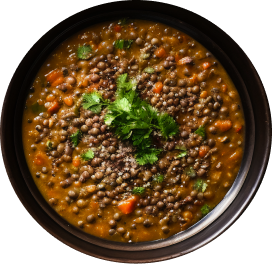

1 large can (28 ounces) diced tomatoes, lightly drained
4 cups vegetable broth
2 cups water
1 teaspoon salt, more to taste
Pinch of red pepper flakes
Freshly ground black pepper, to taste
1 cup chopped fresh collard greens or kale, tough ribs removed
1 to 2 tablespoons lemon juice (½ to 1 medium lemon), to taste
Instructions
Warm the olive oil in a large Dutch oven or pot over medium heat. One-fourth cup olive oil may
seem like a lot, but it adds a lovely richness and heartiness to this nutritious soup.
O nce the oil is shimmering, add the chopped onion and carrot and cook, stirring often, until
the onion has softened and is turning translucent, about 5 minutes.
Add the garlic, cumin, curry powder and thyme. Cook until fragrant while stirring constantly,
about 30 seconds. Pour in the drained diced tomatoes and cook for a few more minutes, stirring
often, in order to enhance their flavor.
Pour in the lentils, broth and the water. Add 1 teaspoon salt and a pinch of red pepper flakes.
Season generously with freshly ground black pepper. Raise heat and bring the mixture to a boil,
then partially cover the pot and reduce the heat to maintain a gentle simmer. Cook for 25 to 30
minutes, or until the lentils are tender but still hold their shape.
Transfer 2 cups of the soup to a blender. Securely fasten the lid, protect your hand from steam
with a tea towel placed over the lid, and purée the soup until smooth. Pour the puréed soup back
into the pot. (Or, use an immersion blender to blend a portion of the soup.)
Add the chopped greens and cook for 5 more minutes, or until the greens have softened to your
liking. Remove the pot from the heat and stir in 1 tablespoon of lemon juice. Taste and season
with more salt, pepper and/or lemon juice until the flavors really sing. For spicier soup, add
another pinch or two of red pepper flakes.
Serve while hot. Leftovers will keep well for about 4 days in the refrigerator, or can be frozen
for several months (just defrost before serving).

INSTRUCTIONS
INGREDIENTS
STEP 1
Warm the olive oil in a large Dutch oven or pot over medium heat. One-fourth cup olive
oil may seem like a lot, but it adds a lovely richness and heartiness to this nutritious
soup.
STEP 2
Once the oil is shimmering, add the chopped onion and carrot and cook, stirring often,
until the onion has softened and is turning translucent, this takes about 5 minutes.
STEP 3
Add the garlic, cumin, curry powder and thyme. Cook until fragrant while stirring
constantly, about 30 seconds. Pour in the drained diced tomatoes and cook for a few more
minutes, stirring often, in order to enhance their flavor.
STEP 4
Pour in the lentils, broth and the water. Add 1 teaspoon salt and a pinch of red pepper
flakes. Season generously with freshly ground black pepper. Raise heat and bring the
mixture to a boil, then partially cover the pot and reduce the heat to maintain a gentle
simmer. Cook for 25 to 30 minutes, or until the lentils are tender but still hold their
shape.
STEP 5
Transfer 2 cups of the soup to a blender. Securely fasten the lid, protect your hand
from steam with a tea towel placed over the lid, and purée the soup until smooth. Pour
the puréed soup back into the pot. (Or, use an immersion blender to blend a portion of
the soup.)
STEP 6
Add the chopped greens and cook for 5 more minutes, or until the greens have softened to
your liking. Remove the pot from the heat and stir in 1 tablespoon of lemon juice. Taste
and season with more salt, pepper and/or lemon juice until the flavors really sing. For
spicier soup, add another pinch or two of red pepper flakes.
STEP 7
Serve while hot. Leftovers will keep well for about 4 days in the refrigerator, or can
be frozen for several months (just defrost before serving).
¼ cup extra virgin olive oil
1 medium yellow or white onion, chopped
2 carrots, peeled and chopped
4 garlic cloves, pressed or minced
2 teaspoons ground cumin
1 teaspoon curry powder
½ teaspoon dried thyme
1 large can (28 ounces) diced tomatoes, lightly drained
1 cup brown or green lentils, picked over and rinsed
4 cups vegetable broth
2 cups water
1 teaspoon salt, more to taste
Pinch of red pepper flakes
Freshly ground black pepper, to taste
1 cup chopped fresh collard greens or kale, tough ribs removed
1 to 2 tablespoons lemon juice (½ to 1 medium lemon), to taste